Para o seu final de semana
Fazemos o seu evento especial acontecer
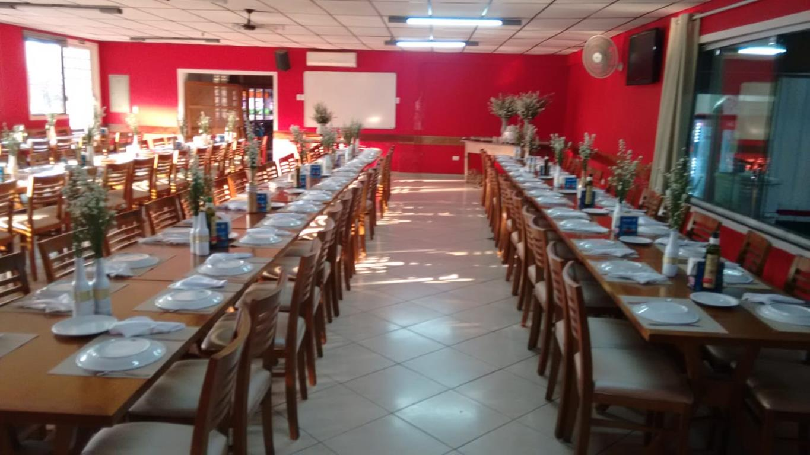
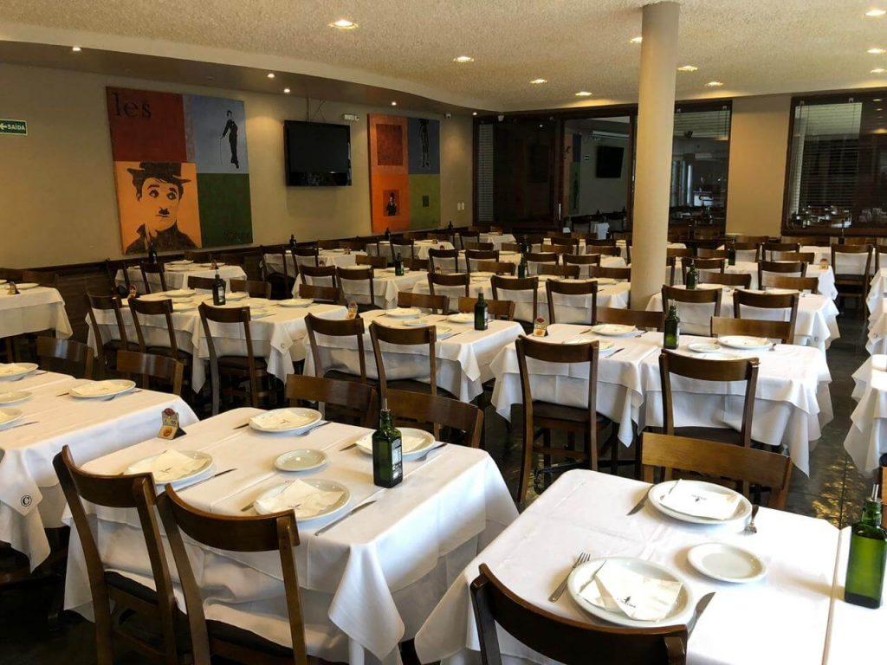
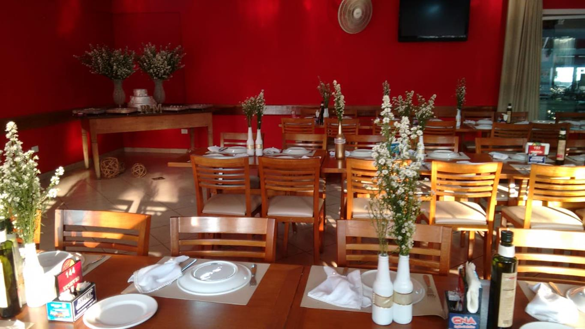
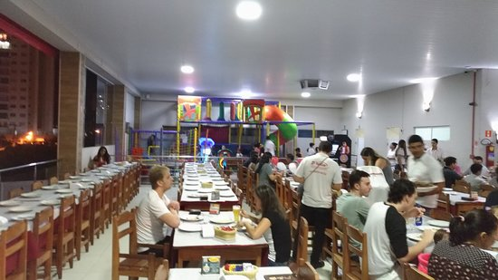
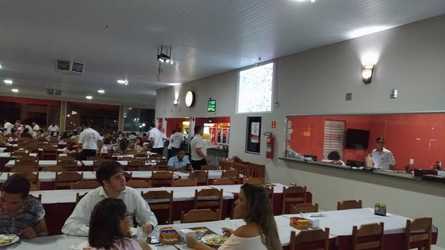
Pizzas para sua família
Comemore com os amigos e sua família
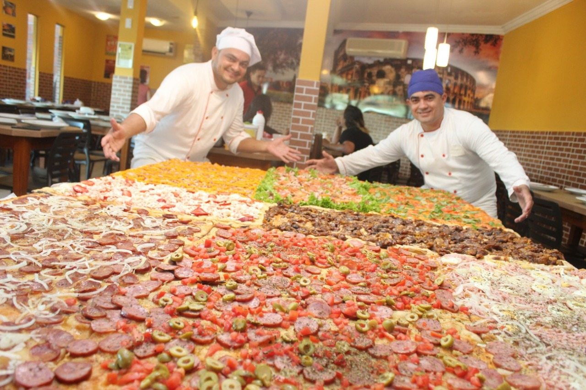
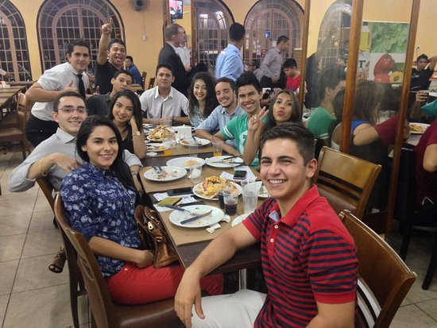
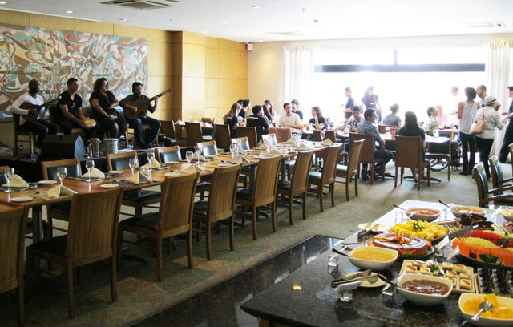
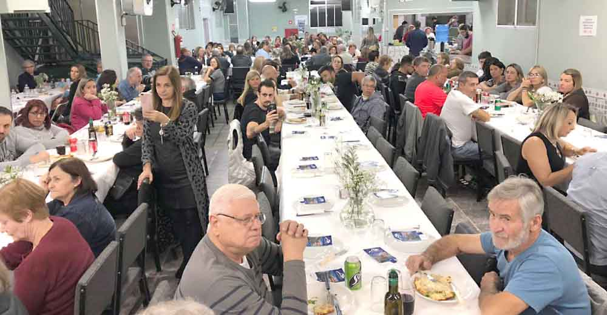

Pizzas ao seu gosto
Diversos Sabores especiais
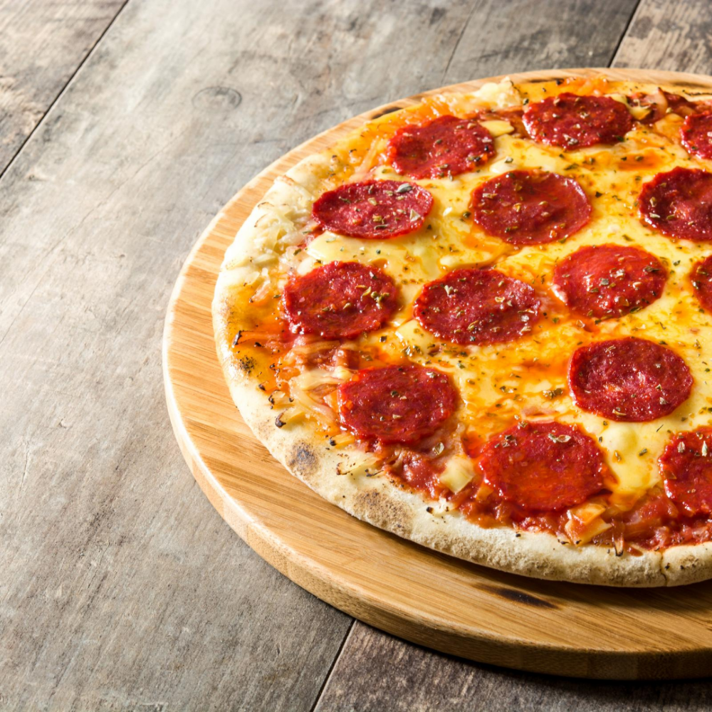
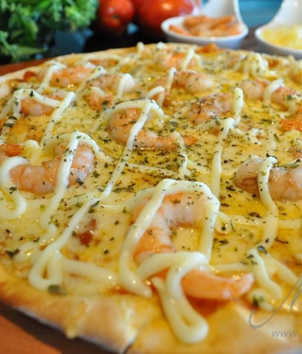
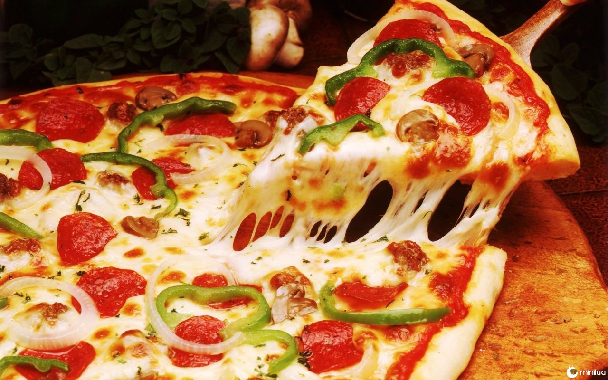
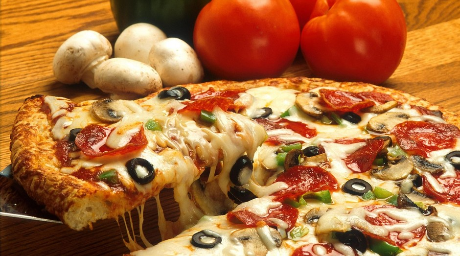
Variedades para o seu melhor atendimento
Opções para o seu lanche
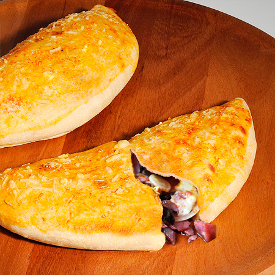
Calzones

Pizzas
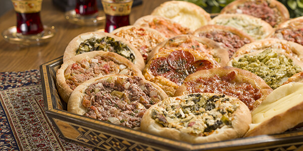
Esfirras.
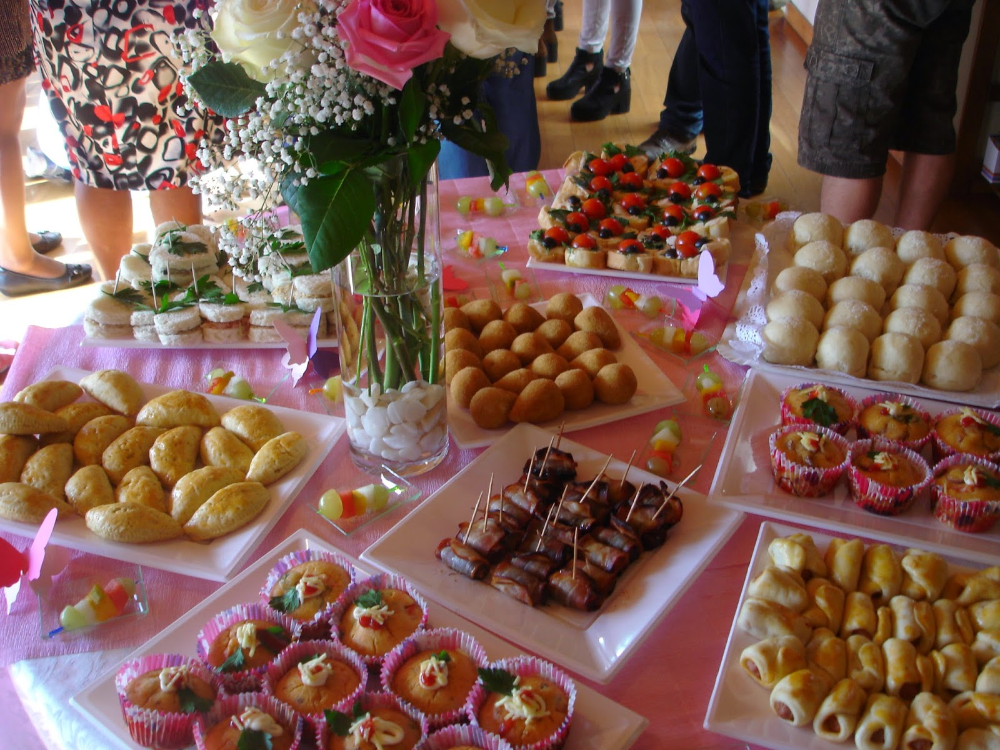
Salgados
Salgados para festas
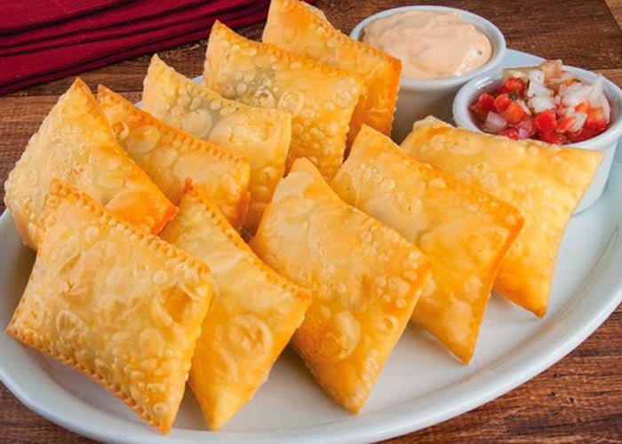